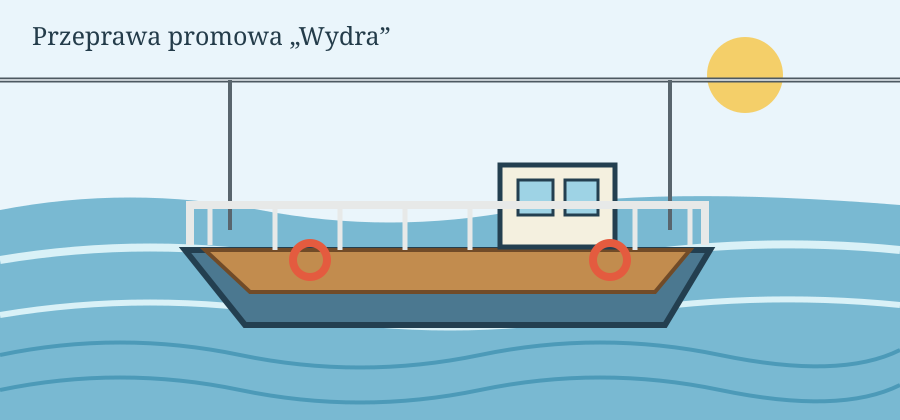

O przeprawie:
Przeprawa promowa „Wydra” łączy Brzeg Górny z Kępą Łąkową przez rzekę Mętną. Prom jest ręczny i ciągnięty po linie rozpiętej nad wodą. Przeprawa trwa około 6 minut. Na promie mieści się 12 osób i 2 rowery. Nie przewozimy samochodów ani motocykli. Prom kursuje od 1 maja do 30 września. Przy wysokim stanie wody przeprawa zostaje wstrzymana. Aktualny stan rzeki można sprawdzić w serwisie hydrologicznym IMGW.

Jak się przeprawić?
- Zadzwoń dwa razy dzwonem na słupie przy kładce.
- Poczekaj, aż przewoźnik podpłynie i przycumuje prom do brzegu.
- Wejdź na trap dopiero wtedy, gdy prom jest przycumowany.
- Postaw rower przy burcie i trzymaj go za kierownicę, a następnie usiądź na ławce.
- Po zajęciu miejsc zapłać za przeprawę na promie, przed odbiciem od brzegu.
- Na drugim brzegu wysiądź dopiero na znak przewoźnika.
Zakazy
- Nie wolno wchodzić na prom z psem bez smyczy.
- Nie wolno stać przy linie.
- Nie wolno skakać z promu do wody.
- Nie wolno wnosić szkła.
- Dzieci do lat 10 nie mogą płynąć bez opieki osoby dorosłej.
Słowniczek pojęć
- Przewoźnik
- Osoba, która prowadzi prom i odpowiada za pasażerów.
- Trap
- Pomost między brzegiem a promem.
- Lina prowadząca
- Stalowa lina nad rzeką, po której prom przesuwa się z brzegu na brzeg.
- Cumowanie
- Przywiązanie promu do brzegu.
- Kępa
- Wyspa albo kawałek lądu, który przy wysokiej wodzie bywa zalewany; od niej wzięła się nazwa wsi.